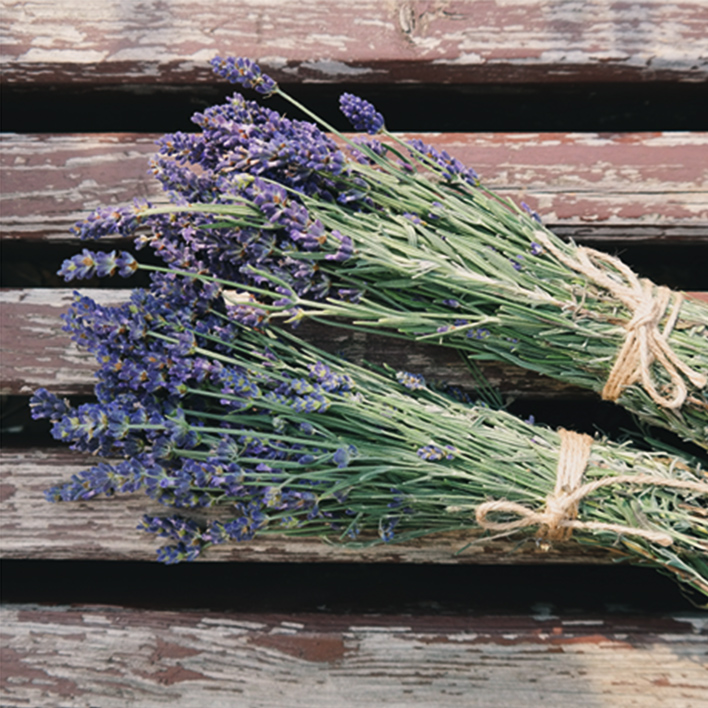

Det franske køkken er i dag en integreret og uadskillig del af den franske kultur.
Finere fransk madlavning er i manges øjne essensen af ordet gourmet og kogegunsten inspirerer professionelle og madentusiastiske amatører verden over.
Når jeg tænker på mine sommerferier i Frankrig, er laven- delmarkerne noget af det første jeg ser for mit indre blik. De uendelige og unikke bakkede marker så langt øjet rækker. Det er herfra inspirationen til min franske gourmetrestaurant kommer. Navnet la Petite Lavende betyder direkte oversat ‘den lille lavendel’ og både farven og blomsten skal gå igen på hele mit site.
Bon Appétit!
